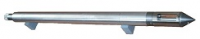
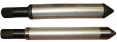
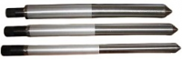

ОБЗОР РАЗДЕЛАПерфорация и муфты
Все приборы имеют Декларацию о соответствия Техническому регламенту Таможенного Союза. Регистрационный номер Декларации о соответствии: ТС № RU Д-RU.АТ15.В.00125Прибор контроля перфорации «КП-90»

Применение: термометрия; манометрия; гамма-каротаж; локация муфт и перфорированных интервалов с одновременной записью всех параметров- Диапазон измерения давления - 0.1-60 МПа;
- Диапазон измерения температуры - 5-120 град. Цел;
- Диапазон измерения ГК- 0-100 мкр/час;
- Отношение амплитуды выходного сигнала локатора на муфте к уровню помех (фоновому сигналу) - не менее 10:1.
- телесистема КСА-Т.
- автоматическая коррекция датчика температуры;
- D90мм/L1,56м
Прихватоопределители«ПОххх»

Приборы предназначены для определения проходимости и прихвата обсадных и насосно-компрессорных труб.Диаметры из ряда 36, 45, 56, 90, 120 мм.
Определение прихвата осуществляется посредством нанесения на трубы магнитных меток с последующим их считыванием до и после приложения к трубам максимально допустимого растягивающего усилия.
Шаблонирование и локация трубных муфт «ШЛМхх»

Для определения проходимости обсадных и насосно-компрессорных труб, для выделения муфтовых соединений этих труб.Диаметры из ряда 36, 45, 56, 90 мм.
Измерения прибором производятся с применением геофизического одножильного бронированного кабеля методом электромагнитной локации муфт (ЛМ), который основан на регистрации изменения магнитной проводимости металла бурильных труб, обсадной колонны или насосно-компрессорных труб вследствие изменения их конструктивной однородности.
Блок электронный «КП17»
Предназначен для модернизации каверномера СКП-1. Модернизация осуществляется за счет замены электроники прибора при сохранении его электромеханической частиПри установке в СКП-1 блок обеспечивает одновременное измерение скважинным прибором за один спуско-подъем значений двух диаметров скважины, измеренных во взаимоперпендикулярных плоскостях и их полусуммы.
Траб.макс - - 120 С.
Раскрытие измерительных рычагов прибора КСП-1 осуществляется нестабилизированным напряжением постоянного тока величиной 250В.